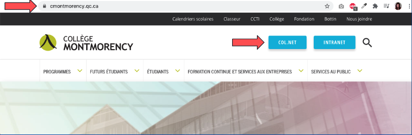
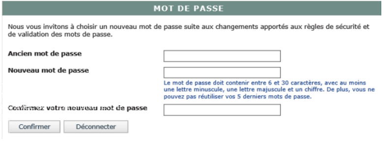
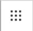
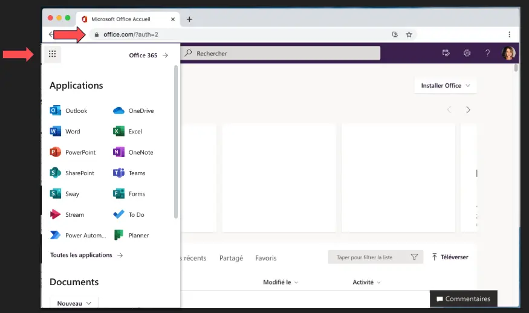
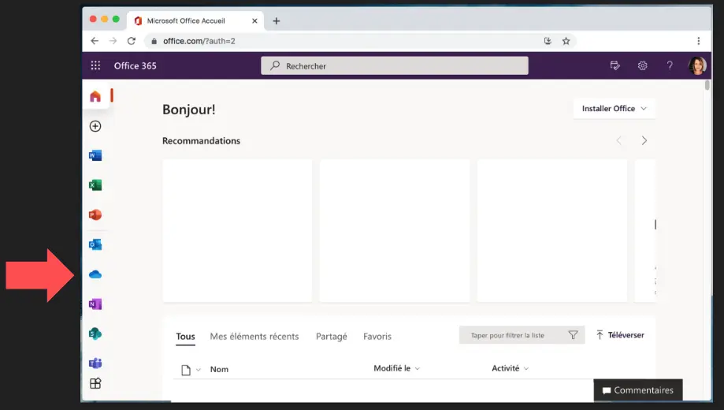

Questions pour les étudiants
- Qu'est-ce qui vous a poussé à choisir une formation en multimédia ?
- Quels sont vos domaines d'intérêt particuliers en multimédia (design graphique, développement web, animation, etc.) ?
- Quels logiciels ou outils multimédias maîtrisez-vous et lesquels aimeriez-vous apprendre davantage ?
- Comment voyez-vous votre carrière future dans le domaine du multimédia ?
- Quels sont vos projets ou objectifs actuels en lien avec vos études en multimédia ?
Qu’est-ce que COL.NET au juste?
Col.Net est le portail utilisé par les étudiants et les enseignants du collège. On y retrouve l’horaire, les résultats en cours de session, le QAQ bulletin, les messages de l’administration et tout ce qui vous servira pendant toute la durée de vos études. Prenez l’habitude de vous y connecter souvent!
Procédure de connexion au système Col.NET
Code d’usager ÉTUDIANT
Il s'agit du numéro de demande d'admission (DA) à 9 caractères. Le numéro de DA apparaît sur la carte d'identité, la lettre d'admission ou la confirmation d'inscription.
Lorsque le numéro de DA est à 7 caractères, il doit être précédé de :
Mot de passe
Dans tous les cas, lors de la première connexion, la date de naissance est requise sous la forme AAAAMMJJ (exemple : 19510923 pour le 23 septembre 1951). Lors de la première identification, Col.NET demande de créer un mot de passe qui sera utilisé lors des connexions subséquentes.
Vous devez : entrer votre ancien mot de passe (votre date de naissance sous la forme AAAA/MM/JJ) entrer votre nouveau mot de passe (entre 6 et 30 caractères, avec au moins une lettre minuscule, une lettre majuscule et un chiffre) et ensuite le saisir à nouveau pour le confirmer:
Outils Microsoft 365, tous accessible via
 Votre nuage informatique
Démo OneDrive, création, édition, renommer, déplacement et partage de fichiers
Rejoindre les équipes:
- Cliquez sur le bouton Équipes sur le côté gauche de l’application
- Puis cliquez sur « Se joindre ou créer une équipe » dans la liste des équipes
- Cliquez ensuite sur « Se joindre à une équipe à l’aide d’un code », collez le code dans la zone code de l’entrée, puis cliquez sur rejoindre.